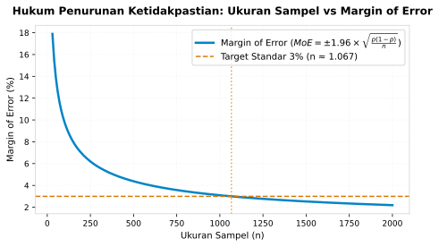

3 Epistemologi Tabayyun: Seni Menguji Klaim
“Angka persentase sering kali bekerja laksana mantra sihir modern. Ketika seseorang menyitir bahwa delapan puluh persen orang menyetujui sebuah pendapat, nalar kritis publik kerap seketika bungkam, seolah angka telah menghapuskan segala ruang untuk bertanya.”
3.1 Ketika Angka Menjadi Mantra Penakluk
Sebuah peristiwa lumrah kerap kita saksikan di ruang rapat kantor, seminar pendidikan, hingga perdebatan hangat di linimasa media sosial: seseorang memproyeksikan salindia presentasi dengan tulisan berukuran besar: “Survei Membuktikan: 85% Publik Puas terhadap Layanan Kami”. Di bawah angka tersebut, tercantum grafik lingkaran dengan warna-warna cerah yang memikat mata.
Seketika itu pula, suasana ruangan berubah. Angka delapan puluh lima persen itu diperlakukan laksana kebenaran mutlak yang tak terbantahkan. Peserta rapat mengangguk-angguk takzim, para pengambil kebijakan merasa aman, dan kritik membangun yang hendak diajukan mendadak layu sebelum sempat terucap. Siapa yang berani mendebat angka? Bukankah angka adalah fakta objektif yang dingin dan bebas dari prasangka?
Namun, mari kita sejenak menarik napas panjang dan mengajukan beberapa pertanyaan sederhana yang sering kali dilupakan orang: Berapa banyak orang yang sesungguhnya ditanyai dalam survei tersebut? Apakah mereka menanyai seribu orang atau hanya dua puluh orang staf di divisi mereka sendiri? Bagaimana pertanyaan itu diajukan? Apakah responden diberi kebebasan memilih atau digiring oleh redaksi kuesioner yang manipulatif? Siapa yang membiayai survei tersebut?
Ketika kita mulai mengajukan pertanyaan-pertanyaan ini, mantra penakluk itu perlahan kehilangan kekuatannya. Kita menyadari bahwa di balik keindahan angka persentase, tersembunyi sebuah rantai metodologi yang panjang. Jika satu saja mata rantai tersebut rapuh atau bengkok, maka kesimpulan akhir yang dihasilkannya tidak lebih dari sekadar ilusi kuantitatif.
Sikap kritis untuk tidak menelan mentah-mentah sebuah klaim sebelum menguji keabsahan sumbernya adalah inti dari apa yang kita sebut sebagai epistemologi Tabayyun. Dalam tradisi etika universal dan khazanah pemikiran Islam, tabayyun bukanlah kepasifan moral yang menuntut kita menutup mata dari realitas. Sebaliknya, tabayyun adalah disiplin penyelidikan kebenaran yang sangat aktif. Tabayyun adalah keberanian akal budi untuk menuntut bukti sahih, melacak asal-usul data, dan membedah metodologi di balik setiap angka yang disuguhkan ke hadapan publik.
3.2 Komplikasi di Era Banjir Informasi dan Halusinasi AI
Kebutuhan akan nalar tabayyun melonjak secara eksponensial di abad kedua puluh satu. Dahulu, informasi palsu menyebar melalui desas-desus lisan dari mulut ke mulut atau selebaran gelap di pinggir jalan yang mudah kita kenali kepalsuannya. Hari ini, klaim-klaim menyesatkan hadir dengan pakaian yang sangat anggun dan terhormat: infografis beresolusi tinggi, kutipan angka persentase desimal yang tampak presisi, dan istilah-istilah metodologi yang terdengar sangat meyakinkan.
Situasi ini semakin rumit dengan hadirnya revolusi kecerdasan buatan generatif (Generative AI). Model bahasa besar (Large Language Models) kini mampu menyusun laporan analisis statistik dan menyajikan kesimpulan kuantitatif hanya dalam hitungan detik setelah menerima instruksi teks. Ketika seorang manajer, guru, mahasiswa, atau pejabat publik meminta asisten AI: “Berikan saya data tentang efektivitas metode pembelajaran digital di Asia Tenggara”, mesin AI akan dengan fasih menyajikan narasi yang runtut, lengkap dengan angka persentase peningkatan hasil belajar dan kutipan nama-nama lembaga riset.
Namun, di balik kefasihan bahasa mesin itu, tersimpan bahaya besar yang dikenal sebagai halusinasi data (data hallucination). Sistem AI dilatih berdasarkan probabilitas statistik kemunculan kata dalam tumpukan teks raksasa, bukan berdasarkan verifikasi faktual terhadap realitas dunia nyata. Mesin tidak pernah turun ke lapangan, tidak pernah menyebarkan kuesioner, dan tidak pernah memvalidasi apakah angka yang ia susun benar-benar ada di dunia empiris.
Mesin dapat dengan sangat meyakinkan menciptakan angka persentase fiktif, mengutip survei khayalan, dan menyajikan korelasi palsu yang terdengar sangat ilmiah. Tanpa instrumen tabayyun yang tajam, manusia modern rentan menjadi konsumen buta dari dongeng kuantitatif buatan algoritma.
Untuk menjadi pembaca data yang merdeka di era kecerdasan buatan, kita harus memahami cara kerja inferensi statistik modern. Kita perlu menguasai dua pilar utama di balik setiap survei: teori penarikan sampel (sampling theory) dan perhitungan batas kesalahan (margin of error).
3.3 Membedah Anatomi Sampel dan Galat Baku
Bagaimana sesungguhnya ilmu statistika bekerja untuk memotret realitas masyarakat yang sangat luas? Bayangkan seorang koki ulung yang sedang memasak sepanci besar sup lezat untuk pesta ratusan orang. Apakah sang koki perlu meminum seluruh kuah di dalam panci besar itu hanya untuk memastikan apakah rasa asinnya sudah pas?
Tentu saja tidak. Sang koki cukup mengaduk kuah sup secara merata hingga bumbunya tercampur sempurna, lalu mengambil satu sendok kecil kuah untuk dicicipi. Dari satu sendok kecil itulah sang koki dapat menyimpulkan rasa dari keseluruhan panci sup raksasa tersebut.
Perumpamaan sendok sup ini adalah analogi paling sederhana mengenai konsep penarikan sampel (sampling). Keseluruhan kuah di dalam panci adalah populasi (\(N\)), sedangkan satu sendok kuah yang dicicipi adalah sampel (\(n\)). Namun, analogi ini menyimpan satu syarat mutlak: kuah sup harus diaduk rata terlebih dahulu. Jika garam mengendap di dasar panci dan sang koki hanya mencicipi kuah dari lapisan paling atas, kesimpulan yang ia tarik akan salah total.
Dalam riset sosial dan survei opini publik, mengaduk rata populasi manusia yang terdiri dari jutaan individu dengan latar belakang berbeda adalah pekerjaan yang sangat menantang. Inilah yang disebut prinsip keteracakan (randomness): setiap anggota populasi harus memiliki peluang yang sama untuk terpilih menjadi bagian dari sampel.
3.3.1 Mengukur Ketidakpastian: Formula Margin of Error
Statistika bukanlah ilmu tentang kepastian absolut. Statistika adalah seni mengukur dan mengelola ketidakpastian secara jujur. Ketika seorang peneliti mengamati sebagian kecil sampel (\(n\)) untuk memperkirakan proporsi populasi sesungguhnya (\(p\)), selalu ada celah ketidakpastian yang muncul akibat variasi acak. Celah inilah yang dihitung sebagai batas kesalahan atau margin of error (\(MoE\)).
Pada tingkat kepercayaan standar sembilan puluh lima persen, yang berarti jika prosedur pengambilan sampel dan perhitungan yang sama diulang berkali-kali dengan asumsi metode terpenuhi maka sekitar sembilan puluh lima persen interval yang dihasilkan akan mencakup parameter populasi, formula margin of error dirumuskan sebagai:
\[MoE = \pm 1{,}96 \times \sqrt{\frac{p(1-p)}{n}}\]
Jika kita mengasumsikan skenario paling konservatif di mana opini publik terbelah seimbang (\(p = 0{,}5\)), maka formula tersebut dapat disederhanakan menjadi:
\[MoE \approx \pm \frac{0{,}98}{\sqrt{n}} \approx \pm \frac{1}{\sqrt{n}}\]
Kedua formula di atas adalah aproksimasi rancangan acak sederhana: hasilnya berubah bila survei memakai pembobotan, penarikan berklaster, nonrespons tinggi, atau koreksi populasi hingga. Angka acuan seribu responden untuk galat tiga persen hanya berlaku pada asumsi-asumsi tersebut.
Formula sederhana ini menyimpan sebuah hukum keteraturan matematis yang sangat indah, sebagaimana divisualisasikan dalam grafik kerucut ketidakpastian pada Figure 3.1.

Perhatikan bagaimana kurva pada Figure 3.1 bergerak. Pada sampel berukuran sangat kecil (\(n = 30\)), margin of error melambung tinggi di atas delapan belas persen. Itu artinya, jika sebuah survei kecil menyatakan bahwa 60% responden menyukai produk tertentu, persentase sesungguhnya di masyarakat bisa berada di mana saja antara 42% hingga 78%. Rentang seluas tiga puluh enam persen ini membuat angka survei tersebut nyaris tidak berguna sebagai dasar pengambilan keputusan bisnis maupun kebijakan sekolah.
Namun, perhatikan apa yang terjadi saat ukuran sampel bertambah. Ketika sampel mencapai angka seribu pengamatan (\(n \approx 1.067\)), kurva melandai tajam dan menyentuh garis target standar tiga persen (\(\pm 3\%\)). Setelah melewati titik ini, penambahan jumlah responden memberikan penurunan kesalahan yang semakin mengecil. Menambah sampel dari seribu menjadi dua ribu orang hanya memangkas margin kesalahan kurang dari satu persen, namun melipatgandakan biaya operasional survei.
Dari pemahaman formula dan grafik kerucut ini, kita dapat menarik tiga kaidah tabayyun data yang sangat mendasar:
- Hukum Akar Kuadrat: Hubungan antara ketelitian dan ukuran sampel bersifat non-linear. Untuk memotong margin kesalahan menjadi separuhnya, kita harus melipatgandakan ukuran sampel sebanyak empat kali lipat.
- Kerapuhan Survei Skala Mikro: Menilai preferensi ribuan siswa di sebuah sekolah hanya berdasarkan jajak pendapat terhadap dua puluh orang teman sekelas adalah tindakan ceroboh secara epistemologis, karena margin kesalahannya teramat besar.
- Kualitas Keterwakilan Melampaui Jumlah Mutlak: Seribu responden yang ditarik secara acak dan mewakili sebaran usia, jenis kelamin, serta status sosial ekonomi masyarakat jauh lebih sahih daripada sepuluh ribu responden yang mengisi angket sukarela di media sosial yang didominasi oleh kelompok tertentu saja.
3.4 Pelajaran Sejarah, Ketika Survei Raksasa Tumbang
Untuk membuktikan bahwa ukuran data yang masif tidak menjamin kebenaran jika metodologinya cacat, sejarah mencatatkan salah satu kegagalan survei paling terkenal di dunia: pemilihan presiden Amerika Serikat tahun 1936.
Pada masa itu, majalah ternama Literary Digest melakukan jajak pendapat akbar untuk memprediksi siapa yang akan memenangkan pemilihan presiden: petahana Franklin D. Roosevelt atau penantangnya Alf Landon. Tidak tanggung-tanggung, majalah tersebut mengirimkan sepuluh juta kartu pos kuesioner kepada warganya, dan berhasil mengumpulkan lebih dari 2,4 juta lembar jawaban. Ini adalah ukuran sampel raksasa yang belum pernah ada tandingannya.
Berdasarkan analisis terhadap 2,4 juta data tersebut, majalah dengan penuh percaya diri memprediksi bahwa Alf Landon akan menang telak dengan meraih 57% suara, sementara Roosevelt hanya akan memperoleh 43% suara.
Hasil resminya? Franklin D. Roosevelt menang mutlak dengan perolehan 60,8% suara, mencatatkan salah satu kemenangan paling telak dalam sejarah politik modern. Literary Digest salah total hingga delapan belas persen, kehilangan reputasinya, dan bangkrut tak lama kemudian (Squire 1988).
Mengapa survei dengan 2,4 juta responden bisa gagal total? Jawabannya terletak pada apa yang disebut bias pemilihan (selection bias) dan bias non-respons (non-response bias).
Majalah Literary Digest menyusun daftar alamat sampelnya berdasarkan buku direktori telepon, daftar kepemilikan mobil pribadi, dan daftar pelanggan klub mewah. Pada tahun 1936, Amerika Serikat sedang berada di tengah krisis ekonomi Great Depression. Siapa yang memiliki mobil dan telepon rumah pada masa krisis tersebut? Hanya kalangan elit dan masyarakat kelas atas yang mayoritas merupakan pemilih partai penantang. Sebaliknya, jutaan rakyat pekerja yang tidak memiliki mobil dan telepon terabaikan dari sampel survei.
Pada saat yang bersamaan, seorang pionir riset opini publik muda bernama George Gallup melakukan survei tandingan dengan hanya melibatkan lima puluh ribu responden, sebuah sampel yang jauh lebih kecil dibandingkan 2,4 juta milik majalah. Namun, Gallup menyusun sampelnya dengan metodologi keterwakilan berstrata (quota sampling), memastikan bahwa buruh pabrik, petani, dan warga miskin terwakili secara proporsional. Gallup berhasil memprediksi kemenangan Roosevelt dengan sangat presisi.
Pelajaran dari peristiwa tahun 1936 ini abadi: dalam dunia data, satu sendok kuah sup yang diaduk dengan jujur jauh lebih berharga daripada sepanci sup penuh lemak yang diambil hanya dari permukaan atasnya. Ukuran data yang besar (Big Data) tidak pernah bisa menebus dosa dari metodologi pengambilan sampel yang bias.
3.5 Tiga Rukun Uji Tabayyun dalam Kehidupan Nyata
Bagaimana kita mengamalkan epistemologi tabayyun saat membaca berita di koran pagi, laporan kinerja di tempat kerja, atau diskusi komite sekolah? Kita dapat menerapkan tiga rukun pemeriksaan data berikut:
3.5.1 Periksa Sanad dan Kredibilitas Pengumpul Data
Setiap kali membaca hasil survei, telusuri siapa lembaga yang melakukannya. Apakah mereka memiliki rekam jejak independensi ilmiah, ataukah mereka konsultan bayaran yang disewa oleh pihak yang berkepentingan untuk membentuk persepsi publik? Jika sebuah perusahaan rokok merilis data survei yang menyatakan bahwa rokok tidak berbahaya bagi kesehatan, atau sebuah pengembang perumahan merilis data yang menyatakan bahwa warga kota sangat membutuhkan reklamasi pantai, nalar tabayyun menuntut kita untuk mencurigai adanya benturan kepentingan (conflict of interest).
3.5.2 Periksa Keterhubungan Metodologi Penarikan Sampel
Ajukan pertanyaan kritis: Bagaimana responden dipilih? Apakah setiap orang memiliki kesempatan yang sama untuk diwawancarai, ataukah survei hanya disebarkan secara daring di portal berita tertentu yang pembacanya memiliki kecenderungan politik seragam? Waspadai fenomena voluntary response bias, di mana orang yang mau meluangkan waktu mengisi angket biasanya adalah orang-orang yang memiliki emosi ekstrem (sangat marah atau sangat antusias), sementara mayoritas warga yang bersikap tenang memilih untuk tidak bersuara.
3.5.3 Periksa Redaksi Pertanyaan terhadap Jebakan Penggiringan
Bentuk pertanyaan sangat menentukan jawaban yang dihasilkan. Perhatikan perbedaan dua redaksi pertanyaan berikut: - Pertanyaan A: “Apakah Anda setuju dengan kebijakan pemotongan anggaran fasilitas sekolah demi efisiensi?” - Pertanyaan B: “Apakah Anda rela anggaran fasilitas sekolah anak Anda dipotong demi penghematan birokrasi?”
Pertanyaan B secara eksplisit menggunakan kata-kata bernuansa emosional (“anak Anda”, “birokrasi”) yang menggiring responden untuk menjawab tidak setuju. Data kuantitatif yang dipanen dari pertanyaan yang manipulatif adalah data yang cacat sejak dari lahir.
3.6 Merawat Nurani dan Akal Sehat Bersama
Pada akhirnya, epistemologi tabayyun bukan sekadar seperangkat rumus matematika di atas kertas. Tabayyun adalah perisai peradaban yang melindungi martabat manusia dari tirani kebohongan yang terstruktur.
Ketika kita membiasakan diri untuk bersikap tabayyun terhadap data di lingkungan sekolah, tempat kerja, dan keluarga, kita sedang merawat akal sehat publik. Kita tidak mudah terprovokasi oleh infografis provokatif di grup percakapan keluarga, kita tidak terburu-buru menghakimi kinerja bawahan hanya berdasarkan grafik mingguan yang fluktuatif, dan kita tidak gampang terpesona oleh klaim kecerdasan buatan yang tampak sempurna di layar gawai kita.
Nalar tabayyun mengingatkan kita pada pesan luhur dalam Kitab Suci:
“Dan janganlah kamu mengikuti sesuatu yang tidak kamu ketahui. Sesungguhnya pendengaran, penglihatan, dan hati nurani, semua itu akan diminta pertanggungjawabannya.” (QS. Al-Isra: 36)
Telinga kita untuk menyimak penjelasan, mata kita untuk mengamati fakta, dan hati nurani kita untuk menimbang keadilan. Memadukan ketiganya saat membaca angka adalah wujud nyata dari penghormatan terhadap anugerah akal budi yang telah dianugerahkan kepada kita.